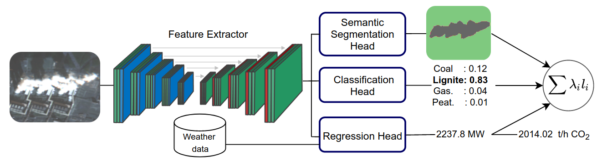
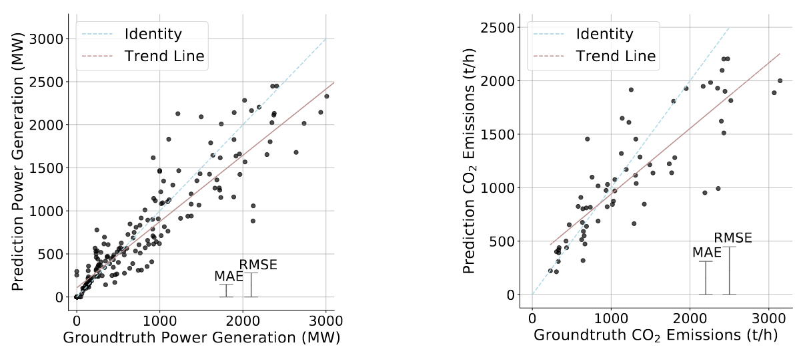

Dieses Projekt bildet die logische Erweiterung unseres vorherigen Projekts zur Charakterisierung industrieller Abgasfahrnen aus Fernerkundungsdaten. Anstatt einfach nur Abgasfahnen zu identifizieren und zu charakterisieren, nutzen wir diese Informationen, um die Treibhausgasemissionen von fossilen Brennstoffkraftwerken zu schätzen.
Die Idee ist recht einfach: Wir wissen, dass wir Abgasfahnen segmentieren und sie robust von natürlichen Wolken unterscheiden können. Für alle europäischen Kraftwerke kennen wir zu jedem gegebenen Zeitpunkt ihre Stromerzeugungsraten. Daher können wir ein Regressionsmodell trainieren, um die Stromerzeugungsrate aus dem Umfang der beobachteten Abgasfahne abzuschätzen. Allerdings ist die scheinbare Größe der Rauchfahne nicht nur eine Funktion des Stromerzeugungsprozesses. Vielmehr handelt es sich um einen hochkomplexen Prozess, der von Umweltvariablen abhängt. Um diese Variablen zu approximieren, stellen wir unserem Regressionsmodell aktuelle Wetterinformationen zur Verfügung, einschließlich Umgebungstemperatur, Luftdruck und Windgeschwindigkeit.
{kind=link}

Um unsere Vorhersagen der Stromerzeugungsraten zu verbessern, nutzen wir einen Multi-Task-Learning-Ansatz: Anstatt einfach ein Modell zu trainieren, das die Stromerzeugung vorhersagt, lernen wir zusätzliche Aufgaben, nämlich ein Klassifikationsmodell für Kraftwerkstypen (siehe hier) und ein Segmentierungsmodell für Rauchfahnen (siehe hier). Durch das Lernen zusätzlicher Aufgaben generiert das Modell reichhaltigere Darstellungen der zugrunde liegenden Daten, was zu einem robusteren Training und einer besseren Leistung führt. Dies spiegelt sich in unseren Ergebnissen wider: Der kombinierte Multi-Task-Learning-Ansatz schneidet bei jeder gelernten Aufgabe besser ab als ein separat trainiertes Modell. Wir können auch zeigen, dass es von Vorteil ist, Wetterdaten in unsere Modelldaten einzubeziehen.
Bisher ist unser Modell in der Lage, die Stromerzeugungsraten (mit einem MAE von 139 MW) zu schätzen – wie erhalten wir CO2-Emissionsraten aus diesem Ergebnis? Unser Modell kann auch die Kraftwerkstypen identifizieren; je nach verwendetem Brennstoff stoßen sie unterschiedliche Mengen CO2 pro MWh in die Atmosphäre aus. Durch die Annäherung dieser Emissionsfaktoren sind wir in der Lage, unsere Schätzungen der Stromerzeugungsraten in Schätzungen der Emissionsraten umzuwandeln.
{kind=link}

Unser Ansatz ermöglicht die Schätzung der Stromerzeugungsraten und CO2-Emissionsraten von Kraftwerken basierend auf frei verfügbaren Sentinel-2-Satellitenbildern. Die Ergebnisse wurden auf dem Workshop Tackling Climate Change with Machine Learning bei NeurIPS 2021 und in der Zeitschrift IEEE Transactions on Geoscience and Remote Sensing (siehe unten) veröffentlicht.
Bibliographie
-
Joelle Hanna, Damian Borth, Michael Mommert, “Physics-Guided Multitask Learning for Estimating Power Generation and CO2 Emissions from Satellite Imagery”, IEEE Transactions on Geoscience and Remote Sensing, publication, 2023.
-
Hanna, J., Mommert, M., Scheibenreif, L. Borth, D., “Multitask Learning for Estimating Power Plant Greenhouse Gas Emissions from Satellite Imagery”, NeurIPS 2021 Tackling Climate Change with Machine Learning Workshop; publication (open access).
-
Hanna J. et al. 2021, code
-
Hanna J. et al. 2021, dataset